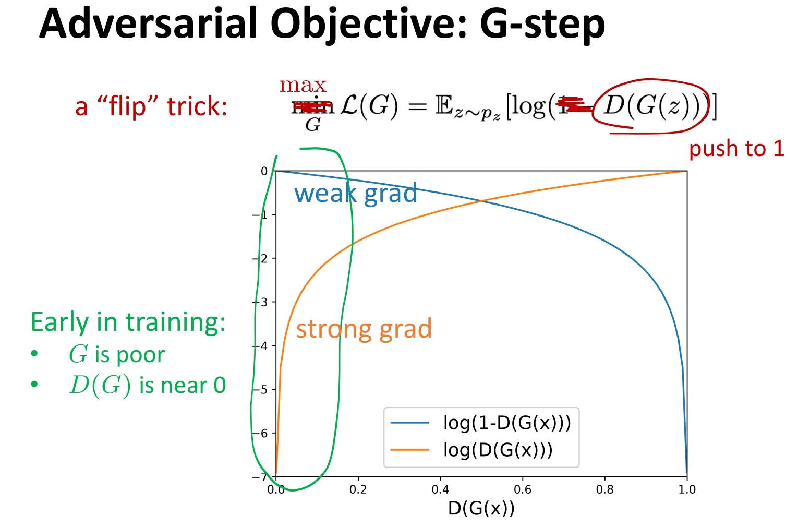
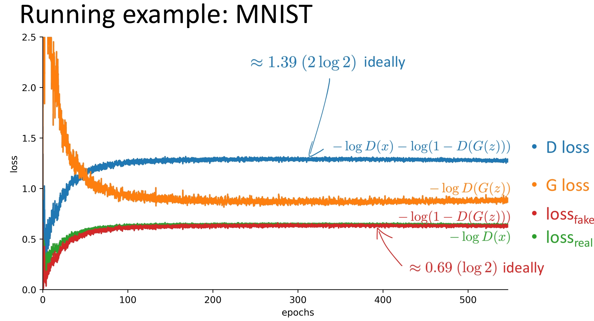
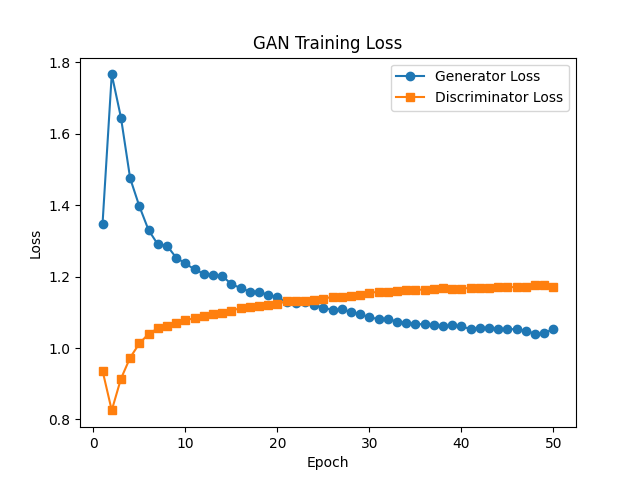
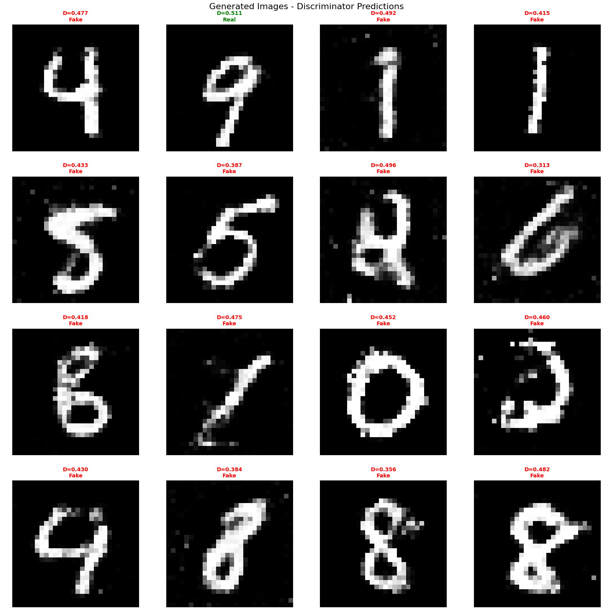
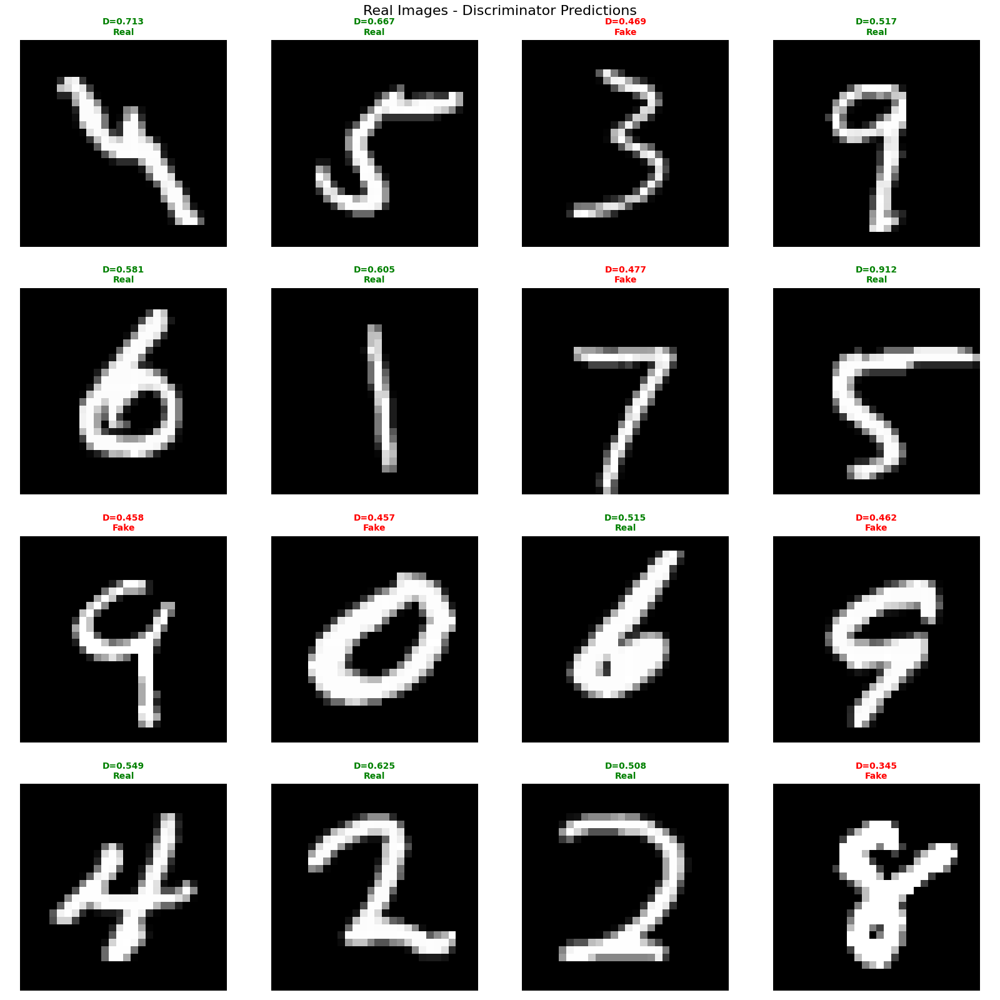

接下来我们进行GAN的实现。GAN能够通过对抗训练学习高维和复杂数据的分布，生成清晰逼真的图像。
根据理论篇的内容可知，GAN的目标函数为:
\[\min_G \max_D L(D, G) = \mathbb{E}_{x \sim p_{data}}[\log D(x)] + \mathbb{E}_{z \sim p_z}[\log(1 - D(G(z)))]\]
在实现时，我们将这个极小-极大博弈分解为两个独立的优化问题:
在固定生成器 \(G\) 的情况下，判别器的目标是最大化:
\[L(D) = \mathbb{E}_{x \sim p_{data}}[\log D(x)] + \mathbb{E}_{z \sim p_z}[\log(1 - D(G(z)))]\]
这等价于最小化二分类交叉熵损失（BCE Loss）:
\[\text{Loss}_D = -\frac{1}{N}\sum_{i=1}^{N}[\log D(x_i) + \log(1 - D(G(z_i)))]\]
其中:
在固定判别器 \(D\) 的情况下，生成器无法直接影响第一项（因为它不接触真实数据），它的目标是让判别器把假样本误认为真样本。
理论上，生成器希望最小化:
\[\text{Loss}_G = \frac{1}{N}\sum_{i=1}^{N}\log(1 - D(G(z_i)))\]
但这个目标在训练初期梯度会很小（因为 \(D(G(z)) \approx 0\)，所以 \(\log(1 - D) \approx 0\)，梯度接近 0，导致梯度消失）。
因此，实践中通常将生成器的目标改为最大化:
\[\mathbb{E}_{z \sim p_z}[\log D(G(z))]\]
这等价于最小化:
\[\text{Loss}_G = -\frac{1}{N}\sum_{i=1}^{N}\log D(G(z_i))\]
且在训练早期能提供更强的梯度。
⚠️ 注意:这是工程上的改进（Goodfellow 在论文中提出两种形式），两种形式在理论上等价，但在实际训练中，最大化 \(\log D(G(z))\) 能提供更好的梯度信号。
如图1所示，两种损失函数形式的梯度对比:

图1 生成器损失函数的两种形式:最小化 \(\log(1-D(G(z)))\) vs 最大化 \(\log D(G(z))\)。蓝色显示在训练初期（\(D(G(z)) \approx 0\)），最小化 \(\log(1-D)\) 的梯度接近 0，导致梯度消失；棕色显示最大化 \(\log D\) 在训练早期能提供更强的梯度信号，有助于生成器的训练。
GAN的训练采用交替优化的策略:
在实际实现中，通常会让判别器训练 \(k\) 步（\(k \geq 1\)），然后训练生成器 1 步，以保持训练的平衡。
GAN的网络结构包含两个独立的网络:生成器（Generator）和判别器（Discriminator）。
import torch
import torch.nn as nn
import torch.nn.functional as F
class Generator(nn.Module):
"""生成器:从噪声生成图像"""
def __init__(self, noise_dim, hidden_dim, output_dim):
super().__init__()
self.linear1 = nn.Linear(noise_dim, hidden_dim)
self.bn1 = nn.BatchNorm1d(hidden_dim)
self.linear2 = nn.Linear(hidden_dim, hidden_dim * 2)
self.bn2 = nn.BatchNorm1d(hidden_dim * 2)
self.linear3 = nn.Linear(hidden_dim * 2, hidden_dim * 4)
self.bn3 = nn.BatchNorm1d(hidden_dim * 4)
self.linear4 = nn.Linear(hidden_dim * 4, output_dim)
def forward(self, z):
h = F.leaky_relu(self.bn1(self.linear1(z)), 0.2)
h = F.leaky_relu(self.bn2(self.linear2(h)), 0.2)
h = F.leaky_relu(self.bn3(self.linear3(h)), 0.2)
x = torch.tanh(self.linear4(h)) # 输出范围 [-1, 1]
return x
class Discriminator(nn.Module):
"""判别器:判断输入是真实图像还是生成图像"""
def __init__(self, input_dim, hidden_dim):
super().__init__()
self.linear1 = nn.Linear(input_dim, hidden_dim * 4)
self.dropout1 = nn.Dropout(0.3)
self.linear2 = nn.Linear(hidden_dim * 4, hidden_dim * 2)
self.dropout2 = nn.Dropout(0.3)
self.linear3 = nn.Linear(hidden_dim * 2, hidden_dim)
self.dropout3 = nn.Dropout(0.3)
self.linear4 = nn.Linear(hidden_dim, 1)
def forward(self, x):
h = self.dropout1(F.leaky_relu(self.linear1(x), 0.2))
h = self.dropout2(F.leaky_relu(self.linear2(h), 0.2))
h = self.dropout3(F.leaky_relu(self.linear3(h), 0.2))
out = torch.sigmoid(self.linear4(h)) # 输出 [0, 1] 的概率值
return outGenerator类是一个多层全连接网络，将噪声向量 \(z\) 映射为图像。前向传播的计算过程如下:
def forward(self, z):
h = self.linear1(z) # noise_dim -> hidden_dim
h = self.bn1(h) # Batch Normalization
h = F.leaky_relu(h, 0.2) # LeakyReLU激活
h = self.linear2(h) # hidden_dim -> hidden_dim*2
h = self.bn2(h)
h = F.leaky_relu(h, 0.2)
h = self.linear3(h) # hidden_dim*2 -> hidden_dim*4
h = self.bn3(h)
h = F.leaky_relu(h, 0.2)
x = self.linear4(h) # hidden_dim*4 -> output_dim
x = torch.tanh(x) # 输出范围 [-1, 1]
return x关键设计点:
tanh 激活函数，将输出限制在 \([-1, 1]\) 范围内，与归一化后的输入数据范围匹配Discriminator类也是一个多层全连接网络，将图像映射为一个标量概率值。前向传播的计算过程如下:
def forward(self, x):
h = self.linear1(x) # input_dim -> hidden_dim*4
h = F.leaky_relu(h, 0.2)
h = self.dropout1(h) # Dropout正则化
h = self.linear2(h) # hidden_dim*4 -> hidden_dim*2
h = F.leaky_relu(h, 0.2)
h = self.dropout2(h)
h = self.linear3(h) # hidden_dim*2 -> hidden_dim
h = F.leaky_relu(h, 0.2)
h = self.dropout3(h)
out = self.linear4(h) # hidden_dim -> 1
out = torch.sigmoid(out) # 输出 [0, 1] 的概率值
return out关键设计点:
sigmoid 激活函数，输出 \([0, 1]\) 范围内的概率值，表示输入是真实样本的概率GAN的训练过程包含两个交替的步骤:
import torch.nn as nn
import torch.optim as optim
# 损失函数:二分类交叉熵（用于判别器）
criterion = nn.BCELoss()
# 优化器
g_optimizer = optim.Adam(generator.parameters(), lr=learning_rate, betas=(0.5, 0.999))
d_optimizer = optim.Adam(discriminator.parameters(), lr=learning_rate, betas=(0.5, 0.999))
# 训练循环
for epoch in range(epochs):
for images, _ in train_loader:
images = images.view(-1, input_dim).to(device) # [B, 784]，-1 自动推断batch大小
# 真实标签和虚假标签
real_labels = torch.ones(len(images), 1, device=device)
fake_labels = torch.zeros(len(images), 1, device=device)
# ========== 训练判别器 n_critic 次 ==========
# 让判别器训练更充分，通常 n_critic=5 效果较好
d_loss_batch = 0.0
for _ in range(n_critic):
d_optimizer.zero_grad()
# 真实图像的损失
real_output = discriminator(images)
d_loss_real = criterion(real_output, real_labels)
# 生成虚假图像（每次都用新的噪声）
noise = torch.randn(len(images), noise_dim, device=device)
fake_images = generator(noise)
# 虚假图像的损失（注意:使用 detach() 断开梯度）
fake_output = discriminator(fake_images.detach())
d_loss_fake = criterion(fake_output, fake_labels)
# 判别器总损失
d_loss = d_loss_real + d_loss_fake
d_loss.backward()
d_optimizer.step()
d_loss_batch += d_loss.item()
# ========== 训练生成器 1 次 ==========
g_optimizer.zero_grad()
# 生成虚假图像
noise = torch.randn(len(images), noise_dim, device=device)
fake_images = generator(noise)
# 生成器希望判别器认为虚假图像是真实的
fake_output = discriminator(fake_images) # 注意:这里不使用 detach()
# 使用非饱和 loss:-log(D(x_fake))，而不是 BCE loss
# 这样可以避免梯度消失问题，训练更稳定
# 原 BCE loss: g_loss = criterion(fake_output, real_labels)
# 非饱和 loss 等价于最大化 log(D(x_fake))，即最小化 -log(D(x_fake))
# 为了数值稳定性，对 fake_output 进行 clamp，避免 log(0)
fake_output_clamped = torch.clamp(fake_output, min=1e-8, max=1.0)
g_loss = -torch.mean(torch.log(fake_output_clamped))
g_loss.backward()
g_optimizer.step()关键点说明:
real_labels）fake_labels）fake_images.detach() 断开梯度，因为此时只训练判别器n_critic 次（通常为 5），让判别器训练更充分，有助于稳定训练-log(D(x_fake)) 而不是 BCE lossfake_output 进行 clamp(min=1e-8, max=1.0) 操作，避免 log(0) 的数值稳定性问题detach()，因为需要反向传播更新生成器参数根据理论篇的推导，在最优情况下（\(p_g = p_{data}\)），GAN 的目标函数值为:
\[L(D^*, G^*) = -2 \log 2 = -\log 4 \approx -1.39\]
此时判别器对真实样本和生成样本的输出都接近 \(0.5\)，无法区分真假。判别器的 BCE 损失为:
\[\text{Loss}_D = -\log(0.5) - \log(0.5) = 2 \log 2 \approx 1.39\]
图2展示了理论训练过程中的损失曲线变化:

图2 GAN训练的理论损失曲线:展示了判别器损失和生成器损失在训练过程中的变化趋势。在最优情况下，判别器损失收敛到 \(2 \log 2 \approx 1.39\)。
实际训练50个epochs后的损失曲线显示:

图3 实际训练50个epochs后的损失曲线:展示了判别器和生成器在实际训练过程中的损失变化。
n_critic 策略有助于稳定训练实际训练结果与理论预期高度一致，验证了代码实现的正确性。
代码中的 infer 部分展示了 GAN 的生成能力:
# 模型推理 - 生成新图像
if infer:
generator.eval()
with torch.no_grad():
# 从标准正态分布采样噪声向量
noise = torch.randn(sample_size, noise_dim, device=device)
fake_images = generator(noise) # 仅使用生成器生成图像
fake_images = fake_images.view(sample_size, 1, 28, 28)
# 将输出从 [-1, 1] 转换回 [0, 1] 用于显示
fake_images = (fake_images + 1) / 2
fake_images = torch.clamp(fake_images, 0.0, 1.0)
图4 GAN的生成能力:从随机噪声生成的MNIST数字图像
从图4中我们可以得到以下结论:
代码中还展示了判别器对真实图像和生成图像的判断能力:
# 可视化:真实图像和生成图像的混合，观察判别器的判断
generator.eval()
discriminator.eval()
# 获取真实图像和生成图像
real_image = ... # 从数据集采样
fake_image = generator(noise) # 生成图像
# 测试判别器的输出
real_pred = discriminator(real_image)
fake_pred = discriminator(fake_image) 
图5 判别器对真实图像的判断
根据图4和图5的判别器输出统计:
从图4和图5中我们可以得到以下结论:
GAN 的目标是达到一个博弈平衡点（Nash Equilibrium）:
当 GAN 充分训练并收敛后:
这就是 GAN 的纳什均衡状态，也是我们评估 GAN 训练效果的重要指标。